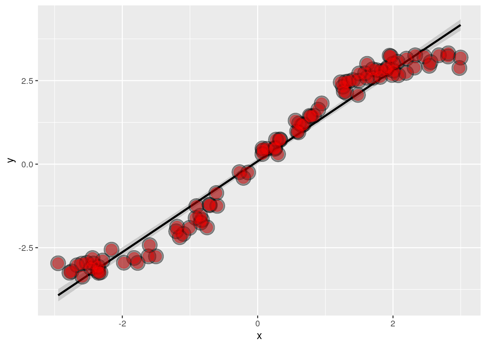
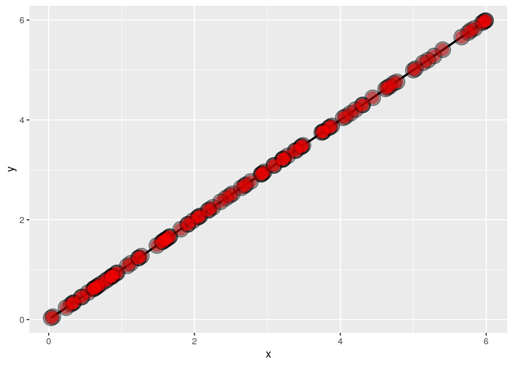
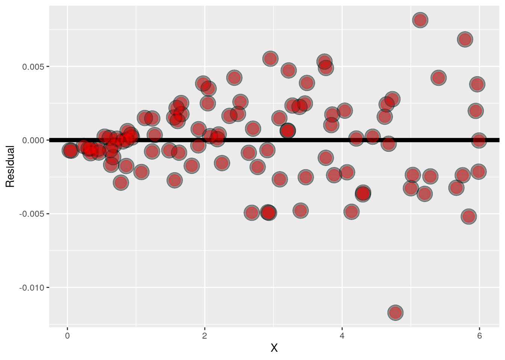
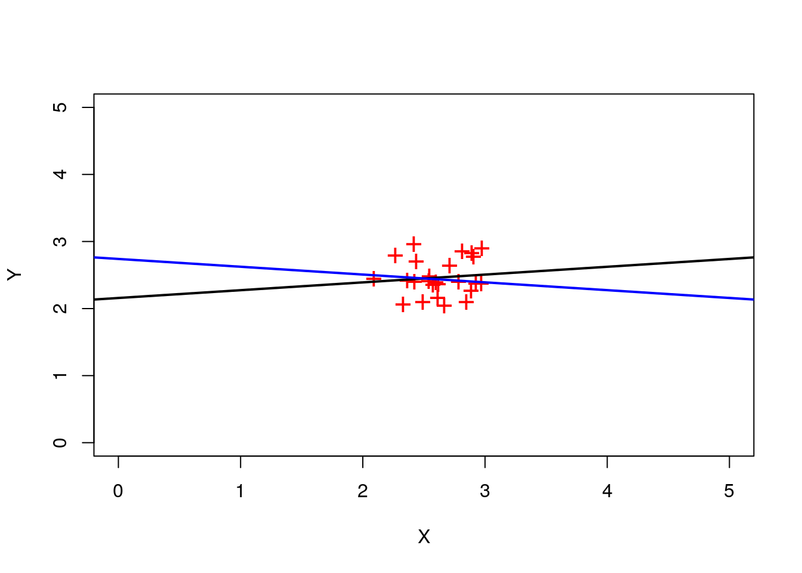

Chapter 2 Week 02
2.1 Statistical linear regression models
Up to this point, we’ve only considered estimation. Estimation is useful, but we also need to know how to extend our estimates to a population. This is the process of statistical inference. Our approach to statistical inference will be through a statistical model. At the bare minimum, we need a few distributional assumptions on the errors. However, we’ll focus on full model assumptions under Gaussianity.
2.1.1 Statistical Linear Regression Models
Finding a good regression line using least squares is a mathematical procedure. However, we’d like to do statistics. We’d like to draw emphasis based on our data. In other words we’d like to generalize from our data to a population using statistical models. Consider the probabilistic model for linear regression \[Y_i = \beta_0 + \beta_1 X_i + \epsilon_{i}\] The values of \(\beta_0, \beta_1\) are the population parameters that we would like to estimate. \(X_i\) is a collection of explanatory variables that we do know, and \(\epsilon_i\) is iid Gaussian errors.
- Here the \(\epsilon_{i}\) are assumed iid \(N(0, \sigma^2)\).
Understanding independent errors in regression can be approached in various ways. One relatively straightforward interpretation is to consider them as the cumulative effect of unmodeled variables that might collectively influence the response. These unmodeled variables act on the response in a manner that can be statistically modeled as independent and identically distributed Gaussian errors.
Setting aside the complexities of interpretation, let’s focus on the mechanics of working with statistical inference for regression. It’s important to note that the expected value of the response given a specific value of the regressor is simply the line at that regressor, represented as \(β_0 + β₁x_i\). Additionally, the variance of the response at any given value of the regressor is denoted as σ². It’s crucial to clarify that this variance pertains to the variation around the regression line and not the overall response variance. Conditioning on X reduces the variation, making it lower than the unconditional response variance.
- Note, \(E[Y_i ~|~ X_i = x_i] = \mu_i = \beta_0 + \beta_1 x_i\)
- Note, \(Var(Y_i ~|~ X_i = x_i) = \sigma^2\).
Both the expected value and variance mentioned here are population quantities. Although there are sample analogs that estimate these values, it’s essential to recognize that, at this point, we are referring to population quantities—these are the estimands that we ideally want to know.
Now that we have a formal statistical framework, we can interpret our regression coefficients with respect to that framework. Take for example, the intercept. It is the expected value \(Y\) given that the regressor is 0. \[E[Y | X = 0] = \beta_0 + \beta_1 \times 0 = \beta_0\]
Note that the regressor being equal to zero is often not of interest in the study. For example, if the regression variable is blood pressure, probably you’re not interested in the response for among people with blood pressure of zero. However, there is an easy fix for this. Consider just shifting our regression variable by a constant \(a\). \[ Y_i = \beta_0 + \beta_1 X_i + \epsilon_i = \beta_0 + a \beta_1 + \beta_1 (X_i - a) + \epsilon_i = \tilde \beta_0 + \beta_1 (X_i - a) + \epsilon_i \] We see a new regression line with a new intercept and the same slope. So, shifting your \(X\) values by value \(a\) changes the intercept, but not the slope.
- Often \(a\) is set to \(\bar X\) so that the intercept is interpretted as the expected response at the average \(X\) value.
For slope, we can interpret it as the expected change in response for a 1 unit change in the predictor. \[ E[Y ~|~ X = x+1] - E[Y ~|~ X = x] = \beta_0 + \beta_1 (x + 1) - (\beta_0 + \beta_1 x ) = \beta_1 \] * Consider the impact of changing the units of \(X\). \[ Y_i = \beta_0 + \beta_1 X_i + \epsilon_i = \beta_0 + \frac{\beta_1}{a} (X_i a) + \epsilon_i = \beta_0 + \tilde \beta_1 (X_i a) + \epsilon_i \] We see a new regression line with a new slope and the same intercept. So, multiplying your \(X\) values by value \(a\) changes the slope, but not the intercept. For example, \(X\) is height in \(m\) and \(Y\) is weight in \(kg\). Then \(\beta_1\) is \(kg/m\). Converting \(X\) to \(cm\) implies multiplying \(X\) by \(100 cm/m\). To get \(\beta_1\) in the right units, we have to divide by \(100 cm /m\) to get it to have the right units.
\[ X m \times \frac{100cm}{m} = (100 X) cm ~~\mbox{and}~~ \beta_1 \frac{kg}{m} \times\frac{1 m}{100cm} = \left(\frac{\beta_1}{100}\right)\frac{kg}{cm} \]
If we would like to guess the outcome at a particular value of the predictor, say \(X\), the regression model guesses \[\hat \beta_0 + \hat \beta_1 X\]
This doesn’t mean that we can only predict at the fitted values. We can predict at any value of \(X\) by plugging in the value of \(X\) into the equation. However, we’re going to have more reasonable predictions if the value of \(X\) that we plug in is in the cloud of data that we used to build the model. Later on, we’ll also talk about how to account for that kind of uncertainty with prediction intervals. But for the time being, let’s just talk about how we get a prediction. Let’s go through an example to interpret the regression
coefficients and show running of the regression coefficient. The dataset is the diamond dataset from the UsingR package. The data is diamond prices in Singapore dollars and diamond weight in carats, which is a standard measure of diamond mass.
library(UsingR)## Loading required package: MASS## Loading required package: HistData## Loading required package: Hmisc## Loading required package: lattice## Loading required package: survival## Loading required package: Formula## Loading required package: ggplot2##
## Attaching package: 'Hmisc'## The following objects are masked from 'package:base':
##
## format.pval, units##
## Attaching package: 'UsingR'## The following object is masked from 'package:survival':
##
## cancerdata(diamond)
library(ggplot2)
g = ggplot(diamond, aes(x = carat, y = price))
g = g + xlab("Mass (carats)")
g = g + ylab("Price (SIN $)")
g = g + geom_point(size = 7, colour = "black", alpha=0.5)
g = g + geom_point(size = 5, colour = "blue", alpha=0.2)
g = g + geom_smooth(method = "lm", colour = "black")
g## `geom_smooth()` using formula 'y ~ x'In this code we assign variable g to the ggplot, the dataset is diamond, the aesthetic has the horizontal axis variable as carat and the y-axis variable as price, we add a layer where the xlab is Mass in carats and the y label price in Singapore dollars. We also add the points of the black background and then a light alpha blending color on top. Afterwards we add a layer that is geom_smooth where method = "lm" will add the regression line. If you omit any arguments, it’s just going to assume the regression
line with \(Y\) as the outcome and \(X\) as the predictor. Finally, we indicate the color of the regression line as black and call the plot.
Notice what we are plotting is the fitted line, the line that minimizes the sum of the squared vertical distances between the points and the lines.
By default, lm includes an intercept, if you don’t want an intercept, you have to explicitly force it in the model. We also want the dataset to be the diamond dataset in other words, we have to give it the data frame. Otherwise, lm looks in the regular R environment for variables in the model. After running the code it basically just prints out the coefficients \(\beta_0, \beta_1\), which are the intercept and labels it as Intercept and the regression variable for the carat, the slope for the carat regression variable.
fit <- lm(price ~ carat, data = diamond)
coef(fit)## (Intercept) carat
## -259.6259 3721.0249Let’s look at this \(3,721\) variable and try to interpret it. It’s saying that we have an expected \(3,721\) Singapore dollar increase in price for every carat increase in mass of the diamond. The intercept, \(-259\) is the expected price of a \(0\) carat diamond not very interesting, because we’re not interested in zero carat diamonds.
A side note, if you want a much more detailed printout by doing summary(fit) which is the summary of the outputted variable from lm and you get this more elaborate printout.
##
## Call:
## lm(formula = price ~ carat, data = diamond)
##
## Residuals:
## Min 1Q Median 3Q Max
## -85.159 -21.448 -0.869 18.972 79.370
##
## Coefficients:
## Estimate Std. Error t value Pr(>|t|)
## (Intercept) -259.63 17.32 -14.99 <2e-16 ***
## carat 3721.02 81.79 45.50 <2e-16 ***
## ---
## Signif. codes: 0 '***' 0.001 '**' 0.01 '*' 0.05 '.' 0.1 ' ' 1
##
## Residual standard error: 31.84 on 46 degrees of freedom
## Multiple R-squared: 0.9783, Adjusted R-squared: 0.9778
## F-statistic: 2070 on 1 and 46 DF, p-value: < 2.2e-16If we mean center our \(X\) variable, so that the intercept is on a more interpretable scale. Here we assign the output to a different variable, fit2 instead of fit, because we don’t want to overwrite the original fit.
fit2 <- lm(price ~ I(carat - mean(carat)), data = diamond)
coef(fit2)## (Intercept) I(carat - mean(carat))
## 500.0833 3721.0249As you notice in code: lm is again the linear model procedure, the outcome stays the same and we use carat - mean(carat), and the I is to indicate that we want to do arithmetic on the variable. So, we want to subtract the mean of the carat variable from the carat variable. This is a way to mean center the variable.
As we expected the slope stays the same, 3,721, but the intercept has changed to \(500\), meaning \(\$ 500\), Singapore dollars is the expected price of the average sized diamond. In this case, the average diamond is about 0.2 carats. A one carat increase is actually kind of big. What about changing the units to one-tenth of a carat? We can do this just by dividing the coefficient by ten. So we know that we would expect to see a \(\$372\) increase in price for every \(0.1\) of a carat increase in the mass of a diamond.
fit3 <- lm(price ~ I(carat/10), data = diamond)
coef(fit3)## (Intercept) I(carat/10)
## -259.6259 37210.2485In the linear model fit instead of putting in carat, we put in \(carat * 10\), the units of this new variable is one-tenth of a carat. The data is of course, still the diamond dataset.
Imagine if someone came to you with three new diamonds that they had 0.16 carats, 0.27 carats and 0.35 carats, and they wanted to know what you would estimate the price would be. Well, you could do it manually by grabbing the two coefficients in multiplying the intercept or adding the intercept plus the slope times these new values. Let’s do that:
newx <- c(0.16, 0.27, 0.34)
coef(fit)[1] + coef(fit)[2] * newx## [1] 335.7381 745.0508 1005.5225predict(fit, newdata = data.frame(carat = newx))## 1 2 3
## 335.7381 745.0508 1005.5225Often, you don’t want to do even that much coding, you want to more general method, especially when you get lots of regression variables. So there’s this general method called
predict that will take the output from several different kinds of model fits. Linear models are one example, but predict is a generic function, and it applies to several different prediction models. The new data is a data.frame(catar=newx) that has the new values of \(X\) for the carat variable. Then when we do that, what you’ll see is the same answer. The difference is that it scales up when we have lots of regressors in much more complicated settings. In general, we want to predict using the predict function. If you omit this new data statement if you just do predict fit, it predicts at the observed \(X\) values, so it gives you the \(\hat Y\) values. If you want it at new \(X\) values, you have to give it this new data argument.
data(diamond)
plot(diamond$carat, diamond$price,
xlab = "Mass (carats)",
ylab = "Price (SIN $)",
bg = "lightblue",
col = "black", cex = 1.1, pch = 21,frame = FALSE)
abline(fit, lwd = 2)
points(diamond$carat, predict(fit), pch = 19, col = "red")
lines(c(0.16, 0.16, 0.12),
c(200, coef(fit)[1] + coef(fit)[2] * 0.16,
coef(fit)[1] + coef(fit)[2] * 0.16))
lines(c(0.27, 0.27, 0.12),
c(200, coef(fit)[1] + coef(fit)[2] * 0.27,
coef(fit)[1] + coef(fit)[2] * 0.27))
lines(c(0.34, 0.34, 0.12),
c(200, coef(fit)[1] + coef(fit)[2] * 0.34,
coef(fit)[1] + coef(fit)[2] * 0.34))
text(newx, rep(250, 3), labels = newx, pos = 2)To illustrate, here’s our observe data points in blue. The fitted values when we do the predict command, the fitted values in red all of the observed \(X\) values and their associated fitted points on the line. These are if we were to draw vertical lines from the observed data points on to the fitted line, they would occur on these red points. When we predicted a new value of \(X\), we’re finding a point along this horizontal axis. In this example we want, 0.16, 0.27 and 0.34. We’re drawing a line up to the fitted regression line and then over to dollars and those are our predicted dollar amounts.
2.2 Residuals
Residuals represent variation left unexplained by our model. We emphasize the difference between residuals and errors. The errors unobservable true errors from the known coefficients, while residuals are the observable errors from the estimated coefficients. In a sense, the residuals are estimates of the errors.
To begin, let’s delve into our illustrative example featuring the diamond dataset. It’s important to recall that in this dataset, the diamonds are priced in Singapore dollars. The key variable under consideration is the weight of the diamonds, expressed in carats. Our objective is to explore the correlation between the weight of diamonds and their corresponding prices, seeking to understand how variations in diamond prices can be elucidated by their mass.
library(UsingR)
data(diamond)
library(ggplot2)
g = ggplot(diamond, aes(x = carat, y = price))
g = g + xlab("Mass (carats)")
g = g + ylab("Price (SIN $)")
g = g + geom_smooth(method = "lm", colour = "black")
g = g + geom_point(size = 7, colour = "black", alpha=0.5)
g = g + geom_point(size = 5, colour = "blue", alpha=0.2)
g## `geom_smooth()` using formula 'y ~ x'Now, our focus is on elucidating the price (on the vertical axis) through the mass (on the horizontal axis). Without taking mass into account, we’d have a scatter of points projecting onto the vertical axis, displaying considerable variation. Disregarding mass would result in a notable amount of unexplained variation. However, when we factor in mass, the variation diminishes, as we’re now examining the variation around the regression line.
This remaining variation around the regression line is termed residual variation. It represents the portion of variation that persists even after accounting for mass. Initially, there is substantial variation, a significant portion of which is clarified by the linear relationship with mass. Nonetheless, there remains some residual variation. These residual distances are referred to as residuals, and they constitute the focal point of today’s lecture. Residuals prove to be valuable for various diagnostic purposes, including assessing model fit. Let’s refresh our memory regarding the model under consideration.
The outcome in our example,price, is \(Y_i\), which we’re assuming is a line. Observed outcome \(i\) is \(Y_i\) at predictor value \(X_i\), predicted outcome \(i\) is \(\hat Y_i\) at predictor value \(X_i\) is \(\hat Y_i = \hat \beta_0 + \hat \beta_1 X_i\). Residual, the between the observed and predicted outcome \(e_i = Y_i - \hat Y_i\), which is the vertical distance between the observed data point and the regression line where least squares minimizes \(\sum_{i=1}^n e_i^2\). In essence, it was minimizing the sum of the squared residual, summation \(e_i\) squared. One way to think about the residuals are as an estimate of \(\epsilon_i\), though, you have to be careful with that, because as we will see later on, we can decrease the residuals just by adding irrelevant regressors into the equation. Let’s talk about some aspects of residuals that will help us interpret them.
- \(E[e_i] = 0\). (Their population’s expected value is zero.)
- If an intercept is included, \(\sum_{i=1}^n e_i = 0\) (Their empirical sum, hence the empirical mean also, is zero if you include an intercept.If you don’t include an intercept, this property doesn’t have to hold.)
- If a regressor variable, \(X_i\), is included in the model \(\sum_{i=1}^n e_i X_i = 0\). (The generalization of this property is, if you include any regression term in linear regression, the sum of the residuals times that regression variable has to be zero.)
- Residuals are useful for investigating poor model fit. (We can create plots that highlight the aspects of poor model fit.)
- Positive residuals are above the line, negative residuals are below.
- Residuals can be thought of as the outcome (\(Y\)) with the linear association of the predictor (\(X\)) removed. (A common use of residuals is to think of them as the outcome \(Y\) with the linear influence of the predictor \(X\) having been removed. For example, if we wanted to in some subsequent model or some subsequent analysis diamond prices, but in a way that has already been adjusted for their weight, calibrating all the diamond prices to be on the same scale regardless of their weight, we would take those residuals from the model fit that has diamond prices as the outcome, and weight as the predictor.)
- One differentiates residual variation (variation after removing the predictor) from systematic variation (variation explained by the regression model). (It’s very common to take residuals and carry them forward in a later analysis where you want to think of them as the, the new outcome, having removed the predictor at that point. But, remember with linear regression, you’re only removing the linear component of the predictor. One should differentiate between residual variation, which is variation that is left over after the explanatory variable has been accounted for in a linear fashion, from systematic variation, which is variation explained by the regression model. Again, residual plots can highlight poor model fit. And, we are going to go through some residual plots.)
- Residual plots highlight poor model fit.
Let’s walk through calculating residuals in this example we’re going to use the diamond dataset.
data(diamond)
y <- diamond$price; x <- diamond$carat; n <- length(y)
fit <- lm(y ~ x)
e <- resid(fit)
yhat <- predict(fit)
max(abs(e -(y - yhat)))## [1] 8.242296e-13max(abs(e - (y - coef(fit)[1] - coef(fit)[2] * x)))## [1] 8.242296e-13We redefine price as y and x as carat, n as the length of the number of pairs. We assign the linear regression object from lm to variable fit. To get the residuals we resid(fit), and we assign that to e. We also get the fitted values by predict(fit) and assign that to yhat. We can check that the residuals are the difference between the observed outcome and the predicted outcome. We can also check that the residuals are the difference between the observed outcome and the intercept plus the slope times the predictor. To show you that residual’s calculated via resid() functions are the same as the residuals that we calculate manually we take the absolute difference between y - yhat and e and find the one is on the scale of \(10^{-13}\) i.e, up to numerical precision, it’s the same thing. Then lastly, we want to show that the residuals are the difference between the observed outcome and the intercept plus the slope times the predictor, again up to numeric precision, exactly the same. To obtain the residuals, the preferred method is to use resid(). However, by demonstrating an alternative code, we aim to shed light on the underlying process of “res” and the specific computation performed by resid(). Ultimately, we would like to demonstrate that the total sum of the residuals equals zero. Technically, it’s \(10^{-14}\), which is sufficiently close to zero. Additionally, the sum of the residuals multiplied by the price variable `x`` must also be zero—albeit at \(10^{-15}\). Therefore, in numerical terms, both cases effectively amount to zero. These residuals represent the magnitudes of the deviations depicted by the red line in the accompanying plot.
plot(diamond$carat, diamond$price,
xlab = "Mass (carats)",
ylab = "Price (SIN $)",
bg = "lightblue",
col = "black", cex = 2, pch = 21,frame = FALSE)
abline(fit, lwd = 2)
for (i in 1 : n)
lines(c(x[i], x[i]), c(y[i], yhat[i]), col = "red" , lwd = 2)Notice all of the blank space in the graph, making the plot kind of useless for that purpose, why don’t we plot the residuals on the vertical axis versus mass on the horizontal axis?
plot(x, e,
xlab = "Mass (carats)",
ylab = "Residuals (SIN $)",
bg = "lightblue",
col = "black", cex = 2, pch = 21,frame = FALSE)
abline(h = 0, lwd = 2)
for (i in 1 : n)
lines(c(x[i], x[i]), c(e[i], 0), col = "red" , lwd = 2)Now we can see the residual variation much more clearly. One important point is: the residuals should be mostly patternless. Also, remember that if you include an intercept, residuals have to sum to zero. We can see some interesting patterns by honing in on the residual plot here. For example, we can see that there were lots of diamonds of exactly the same mass which gets lost in the scatter plot. Next, we want to go through some pathological residual plots, just to highlight what residual plots can do for us.
x = runif(100, -3, 3); y = x + sin(x) + rnorm(100, sd = .2);
library(ggplot2)
g = ggplot(data.frame(x = x, y = y), aes(x = x, y = y))
g = g + geom_smooth(method = "lm", colour = "black")
g = g + geom_point(size = 7, colour = "black", alpha = 0.4)
g = g + geom_point(size = 5, colour = "red", alpha = 0.4)
g## `geom_smooth()` using formula 'y ~ x'
Here X is just going to be uniform \([-3,3]\), y is equal to x, so it’s an identity line, but then we add another term that’s sin(x). This looks like an identity line, but kind of oscillating around it a little bit with some normal noise on top of it. Before we move on to the residual plot, let us make a comment. This model is actually not the correct model for this data and this might happen in practice. This doesn’t mean that this model is unimportant, right? There is a linear trend and the model is accounting for it, it’s just not accounting for the secondary variation in the sin term. To emphasize just because you aren’t fitting the actually correct model, that doesn’t mean the model is itself useless, in regression, having the exact right model is not always the primary goal. You can get meaningful information about trends from incorrect models.
Let’s me plot the residuals’ versus the x variable.
g = ggplot(data.frame(x = x, y = resid(lm(y ~ x))),
aes(x = x, y = y))
g = g + geom_hline(yintercept = 0, size = 2);
g = g + geom_point(size = 7, colour = "black", alpha = 0.4)
g = g + geom_point(size = 5, colour = "red", alpha = 0.4)
g = g + xlab("X") + ylab("Residual")
gYou can see that the sin term is now extremely apparent. This is what the residual plot has done highlighting the model inadequacy. Another example is the following plot, where by appearances, the plot falls perfectly on a line.
x <- runif(100, 0, 6); y <- x + rnorm(100, mean = 0, sd = .001 * x);
g = ggplot(data.frame(x = x, y = y), aes(x = x, y = y))
g = g + geom_smooth(method = "lm", colour = "black")
g = g + geom_point(size = 7, colour = "black", alpha = 0.4)
g = g + geom_point(size = 5, colour = "red", alpha = 0.4)
g## `geom_smooth()` using formula 'y ~ x'
But when you highlight the residuals, it looks quite different.
g = ggplot(data.frame(x = x, y = resid(lm(y ~ x))),
aes(x = x, y = y))
g = g + geom_hline(yintercept = 0, size = 2);
g = g + geom_point(size = 7, colour = "black", alpha = 0.4)
g = g + geom_point(size = 5, colour = "red", alpha = 0.4)
g = g + xlab("X") + ylab("Residual")
g
Plotting the residuals shows the trend toward greater variability as you head along the x variable. That property,
where the variability increases with the x variables called heteroscedasticity. Heteroscedasticity is one of those things
that residual plots are quite good at diagnosing and you couldn’t see it.
Let’s run the residual plot for the diamond data.
diamond$e <- resid(lm(price ~ carat, data = diamond))
g = ggplot(diamond, aes(x = carat, y = e))
g = g + xlab("Mass (carats)")
g = g + ylab("Residual price (SIN $)")
g = g + geom_hline(yintercept = 0, size = 2)
g = g + geom_point(size = 7, colour = "black", alpha=0.5)
g = g + geom_point(size = 5, colour = "blue", alpha=0.2)
gThe x-label is Mass in carats, the y-label is Residual price and just to emphasize the residuals have the same units as the ys. There doesn’t appear to be a lot of pattern in the plot, meaning it’s a pretty good fit.
Let us illustrate something about variability in a diamond dataset that will help us set the stage for defining some new properties about our regression model fit. So we create two residual vectors. The first residual vector is the one where we just fit an intercept, so the residuals are just the deviations around the average price. The second is the variation around the regression line with carats as the explanatory variable and price as the outcome. Then we create a factor variable that labels the set of residuals. The first one is labeled as a bunch of intercept only model residuals and the second set is labeled as a bunch of intercept and slope residuals.
e = c(resid(lm(price ~ 1, data = diamond)),
resid(lm(price ~ carat, data = diamond)))
fit = factor(c(rep("Itc", nrow(diamond)),
rep("Itc, slope", nrow(diamond))))
g = ggplot(data.frame(e = e, fit = fit), aes(y = e, x = fit, fill = fit))
g = g + geom_dotplot(binaxis = "y", size = 2, stackdir = "center", binwidth = 20)## Warning: Ignoring unknown parameters: sizeg = g + xlab("Fitting approach")
g = g + ylab("Residual price")
g
What we see on the left-hand plot with just the intercept is the variation in diamond prices around the average diamond price. What we’re seeing in the rightmost plot is displaying the variation around the regression line. So we have explained a lot of the variation with the relationship with mass. We’re going to talk about \(R^2\), which basically says, we can decompose the total variation, the variation explained by the regression model and the variation that’s left over after accounting for the regression model.
Residual variation is the variation around the regression line (\(Y_i = \beta_0 + \beta_1 X_i + \epsilon_i\) where \(\epsilon_i \sim N(0, \sigma^2)\)). The residuals are the vertical distances between the outcomes and the fitted regression line. If we include an intercept, the residuals have to sum to zero, which means their mean is zero.
The variance of the residuals, is the average squared residual (\(\sigma^2\) is \(\frac{1}{n}\sum_{i=1}^n e_i^2\)).
Most people use \(\hat \sigma^2 = \frac{1}{n-2}\sum_{i=1}^n e_i^2\), they \(n-2\) instead of \(n\) so that \(E[\hat \sigma^2] = \sigma^2\).
The way to think about that is, we include the intercept the residuals have to sum to zero, that puts a constraint. If you know n minus one of them, then, you know the \(n^{th}\) if you have a line term in there, if you have a co-variant in there, then, that puts a second constrain on the residuals. So, you lose two degrees of freedom. If you put another regression variable in there, you have another constraint, you lose three degrees of freedom. So in that sense you really don’t have n residuals, you have \(n-2\) of them, because if you knew \(n-2\) of them you could figure out the last two. And that’s why it’s one over \(n-2\).
You can grab the residual variation out of the lm fit and assign it to a variable.
y <- diamond$price; x <- diamond$carat; n <- length(y)
fit <- lm(y ~ x)
summary(fit)$sigma## [1] 31.84052sqrt(sum(resid(fit)^2) / (n - 2))## [1] 31.84052If you want to grab it as an object that you can assign to something, just put dollar sign sigma. Then you can assign sigma to any other variable. The line sqrt(sum(resid(fit)^2) / (n - 2)) will result in the value and is showing what the lm function is doing behind the scenes.
Now let’s go back to the following plot where we look at the total variability in diamond prices, and compare what happens to the variability when we explain some of that variability with a regression line.
e = c(resid(lm(price ~ 1, data = diamond)),
resid(lm(price ~ carat, data = diamond)))
fit = factor(c(rep("Itc", nrow(diamond)),
rep("Itc, slope", nrow(diamond))))
g = ggplot(data.frame(e = e, fit = fit), aes(y = e, x = fit, fill = fit))
g = g + geom_dotplot(binaxis = "y", size = 2, stackdir = "center", binwidth = 20)## Warning: Ignoring unknown parameters: sizeg = g + xlab("Fitting approach")
g = g + ylab("Residual price")
gThe total variability is just the deviations of the data, \(\sum_{i=1}^n (Y_i - \bar Y)^2\) the average squared deviation of the data around its mean. To make things easy, let’s forget about the denominator and just talk about the sum of the squared deviations. We might call the regression variability as the component of that variability that then gets explained away by the regression line. We would take the points on the regression line, the heights, which is the variability in the response and explained by the regression line, \(\sum_{i=1}^n (\hat Y_i - \bar Y)^2\). The error variability is what’s leftover around the regression line \(\sum_{i=1}^n (Y_i - \hat Y_i)^2\). The interesting identity is that the total variability disregarding everything except for where they’re centered at is equal to the regression variability, that is the variability explained by the model plus the residual variability, the variability left over and not explained by the model. \[ \sum_{i=1}^n (Y_i - \bar Y)^2 = \sum_{i=1}^n (Y_i - \hat Y_i)^2 + \sum_{i=1}^n (\hat Y_i - \bar Y)^2 \] Because the residual variation and the regression model variation add up to the total variation we can define a quantity that represents the percentage of the total variation that’s represented by the model. This is called the coefficient of determination, \(R^2\). R squared is the percentage of the total variability that is explained by the linear relationship with the predictor \[ R^2 = \frac{\sum_{i=1}^n (\hat Y_i - \bar Y)^2}{\sum_{i=1}^n (Y_i - \bar Y)^2} \] So R squared for our diamond example, is the percentage of the variation in diamond price, that is explained by the regression relationship with mass.
Some facts about \(R^2\):
- \(R^2\) is the percentage of variation explained by the regression model.
- \(0 \leq R^2 \leq 1\) (because the regression variability and the error variability and the sums of the squares add up to the total sums of squares, and they are all positive)
- \(R^2\) is the sample correlation squared. (If we define R as the sample correlation between the predictor and the outcome, then R squared is literally that sample correlation R, squared.)
- \(R^2\) can be a misleading summary of model fit. (For example, if you have somewhat noisy data and delete a lot of the points in the middle you can get a much higher R squared. Or if you just add arbitrary regression variables into a linear model fit, you increase R squared and decrease mean squared error)
- Deleting data can inflate \(R^2\).
- (For later.) Adding terms to a regression model always increases \(R^2\).
Anscombe created a particularly stark example of a bunch of data sets with an equivalent R squared, equivalent mean, and variances in the x’s and the y’s, and identical regression relationships, but when you look at the scatter plots, you can see that the fit has very different meanings in each of the cases.
 The first is a nice regression line, exactly sort of along the lines of what we think of, when we think of just a slightly noisy x,y relationship. In the second one clearly there’s a missing term in order to address some of the curvature in the data. In the third one, there’s an outlier. Finally, in the fourth one, all the data stacked up at one particular location and there’s one point way out at the end. So you could imagine getting this if you had the first example and you deleted a lot of the points in the middle. In all these cases you have an equivalent R squared. But the summary to the single number certainly has thrown out a lot of the important information that you get from a simple scatter plot.
The first is a nice regression line, exactly sort of along the lines of what we think of, when we think of just a slightly noisy x,y relationship. In the second one clearly there’s a missing term in order to address some of the curvature in the data. In the third one, there’s an outlier. Finally, in the fourth one, all the data stacked up at one particular location and there’s one point way out at the end. So you could imagine getting this if you had the first example and you deleted a lot of the points in the middle. In all these cases you have an equivalent R squared. But the summary to the single number certainly has thrown out a lot of the important information that you get from a simple scatter plot.
2.2.1 Optional reading How to derive R squared:
\[ \begin{align} \sum_{i=1}^n (Y_i - \bar Y)^2 & = \sum_{i=1}^n (Y_i - \hat Y_i + \hat Y_i - \bar Y)^2 \\ & = \sum_{i=1}^n (Y_i - \hat Y_i)^2 + 2 \sum_{i=1}^n (Y_i - \hat Y_i)(\hat Y_i - \bar Y) + \sum_{i=1}^n (\hat Y_i - \bar Y)^2 \\ \end{align} \]
2.2.1.1 Scratch work
\((Y_i - \hat Y_i) = \{Y_i - (\bar Y - \hat \beta_1 \bar X) - \hat \beta_1 X_i\} = (Y_i - \bar Y) - \hat \beta_1 (X_i - \bar X)\)
\((\hat Y_i - \bar Y) = (\bar Y - \hat \beta_1 \bar X - \hat \beta_1 X_i - \bar Y ) = \hat \beta_1 (X_i - \bar X)\)
\(\sum_{i=1}^n (Y_i - \hat Y_i)(\hat Y_i - \bar Y) = \sum_{i=1}^n \{(Y_i - \bar Y) - \hat \beta_1 (X_i - \bar X))\}\{\hat \beta_1 (X_i - \bar X)\}\)
\(=\hat \beta_1 \sum_{i=1}^n (Y_i - \bar Y)(X_i - \bar X) -\hat\beta_1^2\sum_{i=1}^n (X_i - \bar X)^2\)
\(= \hat \beta_1^2 \sum_{i=1}^n (X_i - \bar X)^2-\hat\beta_1^2\sum_{i=1}^n (X_i - \bar X)^2 = 0\)
2.2.1.2 The relation between R squared and r
Recall that \((\hat Y_i - \bar Y) = \hat \beta_1 (X_i - \bar X)\) so that \[ R^2 = \frac{\sum_{i=1}^n (\hat Y_i - \bar Y)^2}{\sum_{i=1}^n (Y_i - \bar Y)^2} = \hat \beta_1^2 \frac{\sum_{i=1}^n(X_i - \bar X)^2}{\sum_{i=1}^n (Y_i - \bar Y)^2} = Cor(Y, X)^2 \] Since, recall, \[ \hat \beta_1 = Cor(Y, X)\frac{Sd(Y)}{Sd(X)} \] So, \(R^2\) is literally \(r\) squared.
2.3 Inference in regression
Inference is the process of drawing conclusions about a population using a sample. In statistical inference, we must account for the uncertainty in our estimates in a principled way. Hypothesis tests and confidence intervals are among the most common forms of statistical inference.
These statements apply generally, and, of course, to the regression setting that we’ve been studying. In the next few lectures, we’ll cover inference in regression where we make some Gaussian assumptions about the errors.
Before we begin talking about inference, let’s just revisit our model so that it’s fresh in our mind. \(Y_i = \beta_0 + \beta_1 X_i + \epsilon_i\) where \(\epsilon \sim N(0, \sigma^2)\). For the time being, we’re going to assume that the true model is known, and this will be the basis for most of this class. We also assume that you’ve seen confidence intervals and hypothesis tests before. If you feel the need, you should go back and review them. Also, remember \(\hat \beta_0 = \bar Y - \hat \beta_1 \bar X\), \(\hat \beta_1 = Cor(Y, X) \frac{Sd(Y)}{Sd(X)}\).
We would like to review some of the basic concepts from statistical inference. Statistics like \(\frac{\hat \theta - \theta}{\hat \sigma_{\hat \theta}}\) often have the following properties.
- Is normally distributed and has a finite sample Student’s T distribution if the variance is replaced with a sample estimate (under normality assumptions).
- Can be used to test \(H_0 : \theta = \theta_0\) versus \(H_a : \theta >, <, \neq \theta_0\).
- Can be used to create a confidence interval for \(\theta\) via \(\hat \theta \pm Q_{1-\alpha/2} \hat \sigma_{\hat \theta}\) where \(Q_{1-\alpha/2}\) is the relevant quantile from either a normal or T distribution. (For example, if our \(\alpha\) is 5%, so we want a 95% confidence interval, we take the \(97.5^{th}\) quantile.)
In the case of regression with iid sampling assumptions and normal errors, our inferences will follow very similarily to what you saw in your inference class. We won’t cover asymptotics for regression analysis, but suffice it to say that under assumptions on the ways in which the \(X\) values are collected, the iid sampling model, and mean model, the normal results hold to create intervals and confidence intervals. In other words, it’s not mandatory for the errors to be Gaussian for our statistical inferences in regression to hold. You can appeal to large sample theory, though it’s a little bit more complicated.
The variance of our regression slope is actually a highly informative formula. \[\sigma_{\hat \beta_1}^2 = Var(\hat \beta_1) = \sigma^2 / \sum_{i=1}^n (X_i - \bar X)^2\] This is variance of \(\hat \beta_1\), showing how variable the points are around the true regression line, \(\sigma^2\), and how variable my X’s are. The numerator, how variable the points are around the regression line, is somewhat understandable as to why that would get better estimates of the regression slope if that were smaller. However, it’s maybe less intuitive to understand why we want more variance in our predictor in order to get lower variance in our regression slope. To understand it imagine a dataset where the regressors, the predictors, are all packed in very tightly, closely together, then it’s clear we’re not going to estimate a very good line. It could sort of bend around that cloud of points very easily and get equivalent fits.
# Generate a dataset with more random points around 2.5, 2.5
set.seed(102)
num_points <- 25
X <- runif(num_points, min = 2, max = 3)
Y <- runif(num_points, min = 2, max = 3)
# Plot the dataset
plot(X, Y, xlim = c(0, 5), ylim = c(0, 5), xlab = "X", ylab = "Y", pch = "+", col = "red", cex=1.75)
model <- lm(Y ~ I(X))
abline(model, col = 'black',lwd = 2)
model <- lm(Y ~ I(-X+5))
abline(model, col = 'blue',lwd = 2)
On the other hand, if we spread our axis out, we will get a better fitted regression line with lower variance for the slope. It turns out the lowest you can make that variance is to push half the observations to one end and the other half of the observations to another end; however, you’re banking on having a line in between those two because you haven’t collected any data to evaluate that property.
The variance of the intercept, which is maybe a little less informative because intercepts are often a little less of interest than the slopes. \[\sigma_{\hat \beta_0}^2 = Var(\hat \beta_0) = \left(\frac{1}{n} + \frac{\bar X^2}{\sum_{i=1}^n (X_i - \bar X)^2 }\right)\sigma^2\]
In practice, \(\sigma\) is replaced by its estimate. It’s probably not surprising that under iid Gaussian errors \(\frac{\hat \beta_j - \beta_j}{\hat \sigma_{\hat \beta_j}}\) follows a \(t\) distribution with \(n-2\) degrees of freedom and a normal distribution for large \(n\). This can be used to create confidence intervals and perform hypothesis tests.
In the following example we demonstrate the formulas we are giving are exactly the formulas that R is using when it performs its calculations.
library(UsingR); data(diamond)
y <- diamond$price; x <- diamond$carat; n <- length(y)
beta1 <- cor(y, x) * sd(y) / sd(x)
beta0 <- mean(y) - beta1 * mean(x)
e <- y - beta0 - beta1 * x
sigma <- sqrt(sum(e^2) / (n-2))
ssx <- sum((x - mean(x))^2)
seBeta0 <- (1 / n + mean(x) ^ 2 / ssx) ^ .5 * sigma
seBeta1 <- sigma / sqrt(ssx)
tBeta0 <- beta0 / seBeta0; tBeta1 <- beta1 / seBeta1
pBeta0 <- 2 * pt(abs(tBeta0), df = n - 2, lower.tail = FALSE)
pBeta1 <- 2 * pt(abs(tBeta1), df = n - 2, lower.tail = FALSE)
coefTable <- rbind(c(beta0, seBeta0, tBeta0, pBeta0), c(beta1, seBeta1, tBeta1, pBeta1))
colnames(coefTable) <- c("Estimate", "Std. Error", "t value", "P(>|t|)")
rownames(coefTable) <- c("(Intercept)", "x")
coefTable## Estimate Std. Error t value P(>|t|)
## (Intercept) -259.6259 17.31886 -14.99094 2.523271e-19
## x 3721.0249 81.78588 45.49715 6.751260e-40We again use the diamond dataset in the UsingR library. Let’s define the variables y, x, n like before, and \(\beta_1 , \beta_0\). The residuals are response y minus the predicted values, \(beta_0 + \beta_1 * x\). We create the two t-statistics if you’re testing a hypothesis that \(\beta_0\) is zero or \(\beta_1\) is zero, that is the estimate. Here’s the estimate divided by its standard error. We don’t have to subtract off the true value, because the true value is assumed to be zero under this hypothesis. Next we calculate the two p values. If you’ve taken the inference class, then you know how to go from a t-statistic to a p value. In next step, we create the coefficient table created manually without having done any lm or any built in higher level R function. We specify the row names and column names.
However, there is an easy way to do the same thing in R.
coefTable## Estimate Std. Error t value P(>|t|)
## (Intercept) -259.6259 17.31886 -14.99094 2.523271e-19
## x 3721.0249 81.78588 45.49715 6.751260e-40fit <- lm(y ~ x);
summary(fit)$coefficients## Estimate Std. Error t value Pr(>|t|)
## (Intercept) -259.6259 17.31886 -14.99094 2.523271e-19
## x 3721.0249 81.78588 45.49715 6.751260e-40You’ll see everything is exactly the same.
Next we want to get a confidence interval for the intercept and the slope.
sumCoef <- summary(fit)$coefficients
sumCoef[1,1] + c(-1, 1) * qt(.975, df = fit$df) * sumCoef[1, 2]## [1] -294.4870 -224.7649(sumCoef[2,1] + c(-1, 1) * qt(.975, df = fit$df) * sumCoef[2, 2]) / 10## [1] 355.6398 388.5651Here we just need the table part of the summary, just the coefficient. With 95% confidence, we estimate that a 0.1 carat increase in diamond size results in a 355.6 to 388.6 increase in price in (Singapore) dollars, which is we estimate that a 0.1 carat increase in diamond size results in a 356 to 389 increase in price in Singapore dollars.
2.3.1 Prediction
Prediction is a central concept for the data scientist. In fact, we have an entire course, Practical Machine Learning on advanced prediction techniques. However, regression and generalized linear models which we will cover later on in the course are some of the most core techniques for performing prediction, they often produce very good predictions, they’re parsimonious and interpretable, and as an added bonus we can get inference on top of our predictions without doing any sort of data re sampling. By inference we mean you can get predictions, confidence intervals around the predictions to evaluate the uncertainty in those predictions, so that’s very easy in regression and pretty easy in generalized linear models and quite difficult in some more advanced machine learning algorithms, you may have to do data resampling or other techniques. We might want to predict a response, which might be the price of a diamond at a particular mass, in carats, or we might want to predict a child’s height for a particular value of the parent’s height. The obvious estimate in both cases is just take the \(X\), the predictor value multiply it by the relevant estimated slope, \(\hat \beta_1\) and then add the intercept.
- The obvious estimate for prediction at point \(x_0\) is \[\hat \beta_0 + \hat \beta_1 x_0\]
Being a good statisticians requires us to evaluate some uncertainty in the prediction, and it is nice to have a prediction interval. There’s a small intricacy between trying to predict a regression line at a particular point, and trying to predict a future \(Y\) at that same point. Those are two different ideas.
- Line at \(x_0\), \(\hat \sigma\sqrt{\frac{1}{n} + \frac{(x_0 - \bar X)^2}{\sum_{i=1}^n (X_i - \bar X)^2}}\)
- Prediction interval at \(x_0\), \(\hat \sigma\sqrt{1 + \frac{1}{n} + \frac{(x_0 - \bar X)^2}{\sum_{i=1}^n (X_i - \bar X)^2}}\)
What we have here, and it makes sense that our prediction variance first relates around how variable the points are around our regression line, \(\hat \sigma\) and we have the term \(\frac{1}{n}\) that also kind of makes sense. Typically our standard errors decrease at some rate, \(\sqrt{\frac{1}{n}}\). If we’re predicting a new \(Y\), then we have the added 1 out front, so we get a wider interval. If we want to predict a new value at a specific point versus trying to predict what the regression line is at that point. We will talk more about that later, for now let’s focus on the very end term that on both equations: \(\frac{(x_0 - \bar X)^2}{\sum_{i=1}^n (X_i - \bar X)^2}\) consider the numerator of this statistic our prediction error is going to be the lowest when \(X\) not is equal to \(\bar X\) the prediction variance is smallest when we predict at the average mass of a diamond or at the average height of the parents. The denominator is basically how variable the Xs are. The more variable the Xs are, the smaller this term becomes and the lower the prediction error is. Like the slope estimate where the more variable the regressors were, the less variable the slope estimate was. The same thing happens in prediction error, and is an essential part of using regression for prediction, where we get easy and convenient prediction uncertainty associated with the parsimonious predictors.
library(ggplot2)
newx = data.frame(x = seq(min(x), max(x), length = 100))
p1 = data.frame(predict(fit, newdata= newx,interval = ("confidence")))
p2 = data.frame(predict(fit, newdata = newx,interval = ("prediction")))
p1$interval = "confidence"
p2$interval = "prediction"
p1$x = newx$x
p2$x = newx$x
dat = rbind(p1, p2)
names(dat)[1] = "y"
g = ggplot(dat, aes(x = x, y = y))
g = g + geom_ribbon(aes(ymin = lwr, ymax = upr, fill = interval), alpha = 0.2)
g = g + geom_line()
g = g + geom_point(data = data.frame(x = x, y=y), aes(x = x, y = y), size = 4)
gIn predict function we provide the output of lm. For a lot of prediction algorithms, especially linear models and generalized linear models, random forests in R, the predict function is a generic method that applies to them, interval = ("confidence") indicates that we want the confidence interval, not a prediction interval, that’s R’s Code for
creating the interval around the estimated line at that particular value of x not for a potential new y at that particular value of x, if we want an interval for potential new Y at that particular value of X, we change the interval = ("confidence") to interval = ("prediction"), as we do on the fourth line.
The blue is the prediction interval, this is for predicting a new line, and the salmon color is for prediction of the line at those particular values of x. The confidence interval is much narrower than the prediction interval. It is because of that 1 plus for the prediction interval.
Imagine if we collected an infinite amount of data at all different values of x along this line. Well, then, we would pretty much know the regression line exactly, if that were the case, we would be extremely confident about predictions on the line, where the line was at a particular x value. As we collected more and more data, that salmon colored confidence interval will get narrower and narrower around the line to the point where it was just the line itself. That’s what we would expect to happen. That’s just the idea of statistical sampling working. On the other hand, the prediction interval, there’s variability in the Ys, that has nothing to do with how well we estimated \(\beta_0, \beta_1\) and in fact, if I were given the correct \(\beta_0, \beta_1\). There would still be variability in the Ys, because of the error term. Consequently, if we wanted to predict a new y there would be some uncertainty that would be inherent in that prediction. That’s why the prediction interval is always going to be wider than the confidence interval. It doesn’t go away with N. It doesn’t go away as we collect more X’s or anything like that. It’s inherent, and that’s why the prediction interval has a certain amount of width that’s never going to go away.
The last thing as you may notice both of the intervals get narrower toward the center of the data cloud and then get wider as you head out into the tails. That’s just simply saying that we’re more confident in our predictions closer to the mean of the X’s. Because of that one plus term in prediction intervals this phenomena is less obvious in blue color than the salmon one. If we were to go well beyond where we collected data, then these intervals would really become a lot wider which is what we’d want, because we would be extrapolating and we want to predict where we did not collect data.
Summary
- Both intervals have varying widths.
- Least width at the mean of the Xs.
- We are quite confident in the regression line, so that interval is very narrow.
- If we knew \(\beta_0\) and \(\beta_1\) this interval would have zero width.
- The prediction interval must incorporate the variabilibity in the data around the line.
- Even if we knew \(\beta_0\) and \(\beta_1\) this interval would still have width.
2.4 For the project
You need to know a little bit of knitr. In this video, which you may have to refer back to when you start the project, will get you started on knitr.
In this section we will learn how to use knitr to create reproducible reports. We will also learn how to use R Markdown to create reproducible documents. You’ll need a little bit of knitr to create your R project. We open the go File> New File> R Markdown, this will populate a simple knitr document. Here we can run R commands in a code block, which is defined as three right tick marks followed by {r} if you insert a comma after the r you will open up a bunch of options, cache tells R whether or not to keep it, eval= tells whether or not it should evaluate the code and echo= where echo TRUE shows the code and echo FALSE does not show the code. Once you are done with the document click Knit HTML
and it will knit and create an HTML document. That’s just a standard HTML document and you can bring up the document in a browser window. And that’s knitr in a nutshell.
2.5 Practical R Exercises in swirl
During this week of the course you should complete the following lessons in the Regression Models swirl course:
- Residual Variation
- Introduction to Multivariable Regression
- MultiVar Examples
2.6 Week 2 Quiz
- Consider the following data with x as the predictor and y as as the outcome. Give a P-value for the two sided hypothesis test of whether \(β_1\) from a linear regression model is 0 or not.
x <- c(0.61, 0.93, 0.83, 0.35, 0.54, 0.16, 0.91, 0.62, 0.62)
y <- c(0.67, 0.84, 0.6, 0.18, 0.85, 0.47, 1.1, 0.65, 0.36)Consider the previous problem, give the estimate of the residual standard deviation.
In the
mtcarsdata set, fit a linear regression model of weight (predictor) on mpg (outcome). Get a 95% confidence interval for the expected mpg at the average weight. What is the lower endpoint?Refer to the previous question. Read the help file for
mtcars. What is the weight coefficient interpreted as?Consider again the
mtcarsdata set and a linear regression model with mpg as predicted by weight (1,000 lbs). A new car is coming weighing 3000 pounds. Construct a 95% prediction interval for its mpg. What is the upper endpoint?Consider again the
mtcarsdata set and a linear regression model with mpg as predicted by weight (in 1,000 lbs). A “short” ton is defined as 2,000 lbs. Construct a 95% confidence interval for the expected change in mpg per 1 short ton increase in weight. Give the lower endpoint.If my X from a linear regression is measured in centimeters and I convert it to meters what would happen to the slope coefficient?
I have an outcome, Y and a predictor, X and fit a linear regression model with \(Y = β_0 + β_1 * X + ϵ\) to obtain \(\hat β_0, \hat β_1\) . What would be the consequence to the subsequent slope and intercept if I were to refit the model with a new regressor, \(X + c\) for some constant \(c\)?
Refer back to the mtcars data set with mpg as an outcome and weight (wt) as the predictor. About what is the ratio of the the sum of the squared errors, \(\sum_{i=1}^n (Y_i - \hat Y_i)^2\) when comparing a model with just an intercept (denominator) to the model with the intercept and slope (numerator)?
Do the residuals always have to sum to 0 in linear regression?